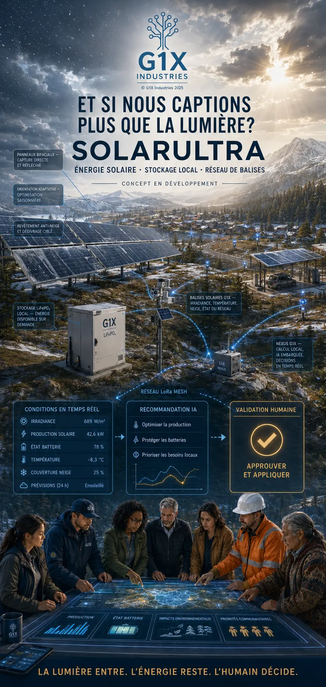

HydroCore
Microcentrales et systèmes hydroélectriques modulaires à faible impact.
Voir l’affiche complète →Conçu et développé au Québec
Énergie intelligente. Technologie locale. Innovation québécoise.
Solutions intégrées
Produire, stocker et optimiser une énergie propre, fiable et adaptée au territoire.
Microcentrales et systèmes hydroélectriques modulaires à faible impact.
Voir l’affiche complète →

Intelligence souveraine
Traitement local, confidentialité renforcée et fonctionnement autonome, sans dépendance permanente au nuage.
Le territoire en temps réel
Des stations météo intelligentes et autonomes conçues pour fournir des données précises, même loin des réseaux traditionnels.
Valeurs simulées pour illustrer l’interface. Connexion aux capteurs requise pour afficher des données réelles.
Comprendre le sous-sol
Acquisition multi-capteurs, cartographie avancée et intelligence artificielle pour transformer les données du terrain en décisions exploitables.

Infrastructure locale
Des systèmes compacts, robustes et adaptés à l’intelligence locale, aux capteurs et aux environnements exigeants.
Architecture conceptuelle — spécifications finales à valider pendant le développement.
Recherche et développement
Microproduction hydroélectrique modulaire
Énergie éolienne adaptée au climat nordique
Réseau météo autonome et distribué
Cartographie géophysique intelligente
Une vision pour le territoire
Un écosystème local où l’énergie, les capteurs et l’intelligence travaillent ensemble au service des communautés.

G1X Industries
G1X Industries développe au Québec des technologies qui rapprochent l’énergie, les données et l’intelligence. Notre objectif : créer des systèmes utiles, autonomes et conçus pour le réel.